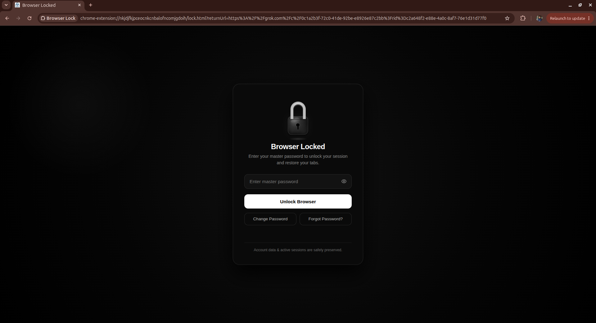

Lock your whole browser with one password.
Browser Lock covers every open tab with a lock screen until you type your password. Free, offline, no account.
Install in three steps
Download the zip
Press the download button above. You get one file:
Browser-Lock.zip.Unzip it
Right-click the file and choose Extract All (on Mac, double-click it). You now have a folder called
Browser-Lock. Keep it somewhere safe. Chrome runs the extension from this folder, so do not delete it.Load it in Chrome
- Open
chrome://extensions - Turn on Developer mode (top right).
- Click Load unpacked and pick the
Browser-Lockfolder, the one withmanifest.jsoninside.
On Edge or Brave, open
edge://extensionsorbrave://extensionsinstead.- Open
That's it. The settings page opens by itself so you can choose your password. Pin the extension from the puzzle icon to lock with one click, or press Alt+L.
If Chrome shows a "Disable developer mode extensions" pop-up when it starts, dismiss it without choosing Disable.
See it working before you install
The demo is a Chrome window you can click. Set a password, watch every tab lock, then unlock it.
Open the live demo
- Locks every tab
- All open tabs and new tabs show the lock screen. Your pages come back when you unlock.
- Locks on startup
- Close all windows and reopen Chrome: it asks for your password first.
- Forgot your password?
- Answer your 3 security questions to get back in. No email, no internet.
- Auto-lock
- Lock instantly with Alt+L or the toolbar icon, or set an idle timer in settings.
Questions
Why isn't it in the Chrome Web Store?
It is shared directly as a zip for now. Loading an unpacked extension is the normal way Chrome lets you run one that isn't from the store.
Does it send my data anywhere?
No. It works offline and keeps only a salted hash of your password inside your own Chrome profile.
Is it a vault?
No. It stops casual access. Someone who can open chrome://extensions can remove it, so treat it as a privacy screen.